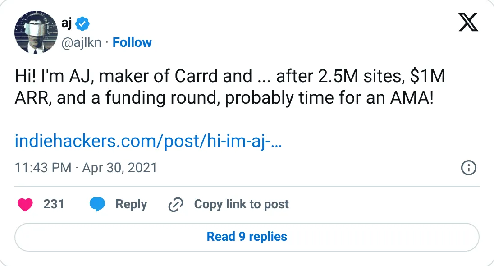
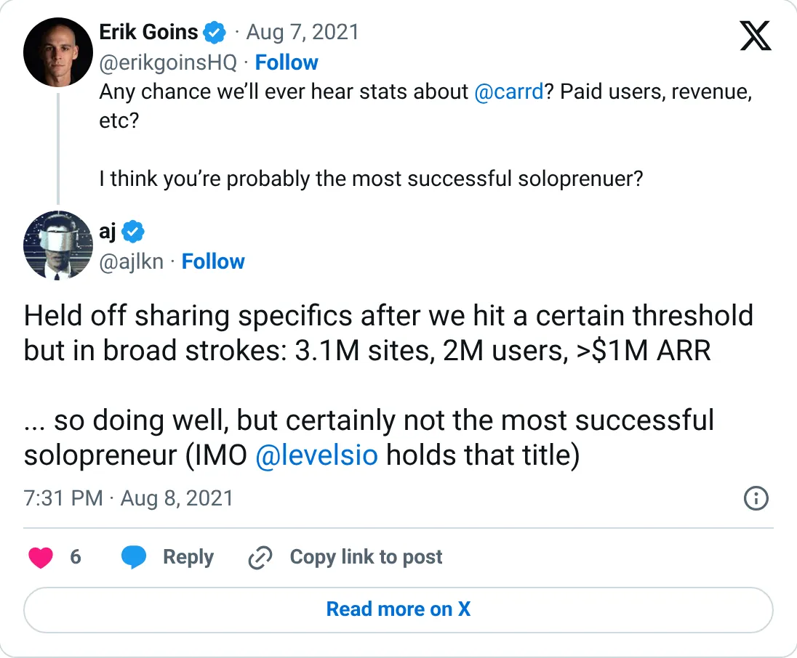

Not a pick
Carrd
The ledger looks real. It is not one of the clearer things to start next.
~$100K MRR (~$1.2M ARR, 2024)
Should you build this
The money looks real, and it is still not a recommendation to start a copy. Carrd's latest figure is a soft one: about $100K MRR, from a 2024 interview, date approximate, after he had already said the product was past $1M ARR in 2021. He took a small seed round, then stopped giving specifics. A founder who wanted to pump a valuation would not go quiet at a round ~$100K while sitting on millions of sites. The number is fuzzy and old. It is not a costume. Treat “about $100K” as the last time he was willing to say, not as this month's Stripe.
Cited from the captured posts, shown below: the earliest captured post (Apr 30, 2021) is the source for “$1M ARR, 2.5M sites”; the latest milestone (Aug 8, 2021) is the source for “>$1M ARR, 3.1M sites”.
Posts this is based on

$1M ARR, 2.5M sites
Open on X

>$1M ARR, 3.1M sites
Open on X
What the product is
Simple, cheap one-page website builder ($19/yr Pro plan) used for personal profiles, landing pages and link-in-bio sites.
⚠ Founder stopped sharing specifics; the latest figure is from a 2024 interview (date approximate). Note: small $2M seed round in 2021.